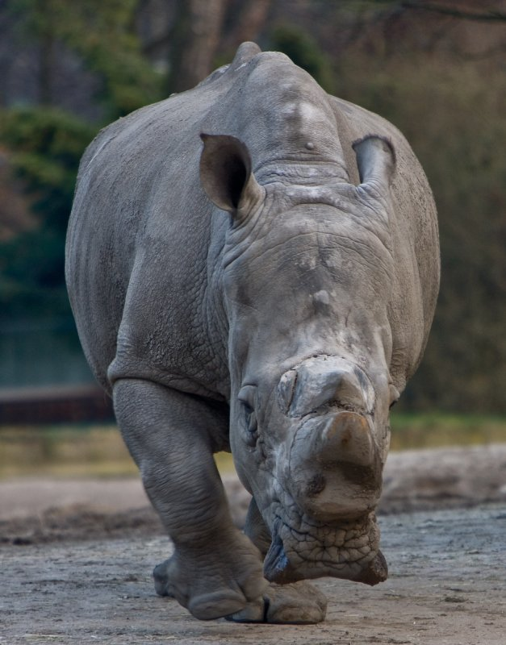

Parade der Vierbeiner: Nashorn ★kostenlose Anleitung★
2020.10.22 19:08
Direkt zum Hauptbereich
Suche
Häkelfieber Austria
AbonnierenDiesen Blog abonnieren
Neue Beiträge bequem ins eMail-Postfach:
Familie Barbapapa Lalylala Sternzeichen-ModKits geh√§keltes ABC Mehr… free pattern Datenschutz Mehr…Parade der Vierbeiner: Nashorn ★kostenlose Anleitung★
Link abrufen Facebook Twitter Pinterest E-Mail Andere Apps - Samstag, Oktober 05, 2019 Es ist Samstag und die Parade der Vierbeiner marschiert wieder auf!Heute gesellt sich das Nashorn zu den anderen Tieren:
Abkürzungen V: verdoppeln (2 fM in eine Masche) A: abnehmen (2 fM zusammenhäkeln) x6: Anzahl der Wiederholungen (hier zB 6) Lm: Luftmasche fM: feste Masche
Infos " Es wird in festen Maschen in fortlaufenden Spiralrunden geh√§kelt. " Bei einem Farbwechsel wird die letzte Masche in der alten Farbe bereits mit der neuen Farbe beendet. " Zu- und Abnahmen teile ich immer auf: In Runden mit einer geraden Anzahl an Maschen zwischen den Zu- oder Abnahmen zB ( 8 , V) x6 h√§kle stattdessen 4 , V, (8, V) x5, 4 . Runden mit einer ungeraden Anzahl an Maschen zwischen den Zu- oder Abnahmen zB ( 5 , V) x6 werden ganz normal geh√§kelt. " Beim Abnehmen verwende stets das „unsichtbare Abnehmen“.
" Stopfe dein Amigurumi während des Häkelns immer wieder mit Füllwatte, bevor die Öffnung zu klein wird. " Du kannst jede beliebige Wolle verwenden, aber achte drauf, dass die Häkelnadel kleiner ist als auf der Banderole angegeben, damit dein Amigurumi nach dem Stopfen nicht löchrig aussieht und die Füllwatte nicht durchscheint.
Bereit? Dann kann’s jetzt losgehen:
Beine (4 Stück) Runde
gesamt 1
6 6 2
V x6 12 3
(1, V) x6 18 4
(2, V) x6 24 5 9 5 Runden 24 24
Nach dem ersten Bein den Faden abschneiden. Beim zweiten Bein Faden nicht abschneiden, sondern mit dem ersten verbinden: Häkle 6 feste Maschen, bei denen du zuerst in Bein 1 und zugleich in die nächste Masche in Bein 2 einstichst:
Das dritte Bein wird ebenfalls mit den bereits zusammengehäkelten verbunden, indem du 6 feste Maschen durch zweites und drittes Bein häkelst:
Das vierte Bein wird zuerst mit 6 festen Maschen mit dem dritten Bein verbunden und gleich anschließend mit 6 festen Maschen mit dem ersten:
Faden nicht abschneiden, es wird gleich weiter der Körper gehäkelt. Das kleine Loch in der Mitte zusammennähen, am besten mit den Endfäden der Beine.
Körper Häkle außen rundherum auf den übrigen Maschen, die vom Zusammenhäkeln der Beine übriggeblieben sind (12 pro Bein). Runde
gesamt 10 15 6 Runden 48 48 16
(6, A) x6 42 17
(5, A) x6 36 18
(4, A) x6 30 19
(3, A) x3, 4, 5 Lm, 10 Maschen überspringen, 1 17 fM + 5 Lm
20
1, A, (2, A) x3, 1, 5 auf die Lm-Kette, 1 18 21
(1, A) x6 12 22
A x6 6
Faden abschneiden und beim Vernähen restliche Öffnung schließen.
Kopf An der noch verbleibenden Öffnung neu anknüpfen, und zwar auf der mittleren der 5 Luftmaschen. Vom Körper sind noch 10 Maschen übrig, von der Luftmaschenkette 5. Zusätzlich wird auch in die Masche links und rechts von den 10 Maschen gehäkelt, in die bereits beim Häkeln des Körpers eine feste Masche gemacht wurde, um Löcher zu vermeiden.
Runde
gesamt 1
17 17 2
V x17 34 3
(4, V) x6, 4 40 4
(3, V) x10 50 5 12 8 Runden 50 50 13
(8, A) x5 45 14
(7, A) x5 40 15
(6, A) x5 35 16
(5, A) x5 30 17
(3, A) x6 24 18
(2, A) x6 18 19
(1, A) x6 12 20
A x6 6
Sicherheitsaugen etwas seitlich und direkt über der Schnauze einsetzen (bei mir zwischen Runde 13 und 14). Faden abschneiden und beim Vernähen die restliche Öffnung schließen.
Schnauze Schlag 9 Lm an und beginne in der 2. Masche von der Nadel aus zu häkeln: Runde
gesamt 1
7 fM, 3 fM in die letzte Lm, auf der anderen Seite der Lm-Kette 6 fM, 2 fM in die letzte Masche 18 2
V, 6, Vx3, 6, V x2 24 3
24 24 4
1, V, 6, (1, V) x3, 6, (1, V) x2 30 5 10 6 Runden 30 30
Faden nicht zu kurz abschneiden und am Kopf annähen. Nasenlöcher aufsticken.
Horn Verwende weiße, etwas dünnere Wolle und eine um eine halbe Nummer kleinere Häkelnadel: Runde
gesamt 1
3 3 2
V, 2 4 3
V, 3 5 4
V, 4 6 5
(2, V) x2 8 6
8 8 7
(3, V) x2 10 8
10 10 9
(4, V) x2 12
Faden nicht zu kurz abschneiden. Horn fest stopfen und auf der Schnauze annähen.
Ohren (2 Stück) Runde
gesamt 1
6 6 2
(1, V) x3 9 3
(2, V) x3 12 4 6 3 Runden 12 12 7
Öffnung flach zusammenlegen und mit 5 fM zusammenhäkeln 5
Faden nicht zu kurz abschneiden, Ohr unten zusammenlegen und am Kopf annähen.
Für den Schwanz am Hinterteil neu anknüpfen und 6 Lm häkeln. Abschließend noch einige Fransen am Ende anknüpfen.
Was du mit Hilfe meiner Anleitungen gehäkelt hast, darfst du gerne verkaufen, nicht aber die Anleitung selber oder Teile davon. Du darfst meine Anleitungen unter der Voraussetzung teilen, dass du auf meine Seite https://haekelfieber-austria.blogspot.com verlinkst.
© Sandra Scherndl, H√§kelfieber Austria
Weitere Tiere aus meiner Reihe findest du hier:
Parade der Vierbeiner: Katze
Parade der Vierbeiner: Hund
Parade der Vierbeiner: Pferd
Parade der Vierbeiner: Nilpferd
Wenn du neugierig bist, welche weiteren Tiere ich noch häkeln werde, kannst du gerne meinen Blog abonnieren (siehe oben) oder Häkelfieber bei Facebook oder Pinterest folgen!
Amigurumi Anleitungen Parade der Vierbeiner Link abrufen Facebook Twitter Pinterest E-Mail Andere Apps
Kommentare
Kommentar posten
Mit dem Veröffentlichen deines Kommentars erklärst du dich mit der Speicherung und Verarbeitung deiner Daten durch diese Website einverstanden.
Beliebte Posts aus diesem Blog
Schalkragen ~ Modell III ★kostenlose Anleitung★
- Freitag, Januar 18, 2019 Gleich im Anschluss an die ersten beiden Schalkragen zeige ich euch das dritte Exemplar, das in festen Maschen gehäkelt und etwas breiter als die anderen beiden ist:Wolle: 2x 100g Red Heart Soft in Schwarz Häkelnadel: Nr. 5,5
Weil der Schalkragen etwas breiter ist, musste ich ihn auch länger machen, damit die Öffnung beim Hals groß genug wird. Darum hat ein Knäuel leider nicht gereicht und ich musste einen zweiten anfangen, von dem ich allerdings nicht mehr viel gebraucht habe.
Abkürzungen Lm: Luftmasche Km: Kettmasche fM: feste Masche BLO: Back Loop Only (es wird nur in das hintere Maschenglied eingestochen)
Infos Häkelnadel Nr. 5,5 Häkle locker, damit der Schalkragen nicht zu steif wird. Jede Reihe wird mit einer Wende-Luftmasche begonnen, die nicht als Masche zählt. Für den gesamten Schalkragen wird nur in das hintere Maschenglied eingestochen.
Bereit? Dann kann’s jetzt losgehen:
Zuerst häkelst du ein Rechteck von 20x75 cm , das am Schluss zusammengehäkelt wird:
Mehr anzeigen
Schalkragen ~ Modell II ★kostenlose Anleitung★
- Donnerstag, Januar 17, 2019 Schon meine dicken Winterhauben habe ich in dreifacher Ausführung gehäkelt, weil die erste so super gelungen ist. Zuerst Modell I in Stäbchen, dann Modell II in halben Stäbchen und zu guter Letzt noch Modell III in festen Maschen.Weil auch der Schalkragen nicht nur ein äußerst praktisches Accessoire ist, sondern dazu richtig stylisch ausschaut, gibt es auch ihn wieder in den drei Varianten.
Wolle: 1x 100g Red Heart Soft in Grau Häkelnadel: Nr. 5,5
Weil ich von Grau nur mehr einen einzigen Knäuel hatte, von dem noch dazu schon etwas gefehlt hat, hab ich diese Variante etwas schmäler gemacht mit nur 22 Maschen in der Breite, während der erste Schalkragen mit 25 Maschen 17cm breit geworden ist. Der eine Zentimeter weniger fällt nicht besonders ins Gewicht, aber noch schmäler würde ich den Schalkragen nicht machen.
Abkürzungen Lm: Luftmasche Km: Kettmasche fM: feste Masche hStb: halbes Stäbchen
Infos Häkelnadel Nr. 5,5 Häkle locker, damit der Schalkragen nicht zu steif wird. " Mehr anzeigen
So geht's: Die dritte Schlaufe
- Donnerstag, Januar 17, 2019 Um beim Häkeln einen typischen Strick-Look zu erhalten, kann man entweder nur in das hintere Maschenglied einstechen oder in die dritte Schlaufe. Diese liegt hinter den beiden Schlaufen, in die man normalerweise einsticht.Am besten kann in die dritte Schlaufe eingestochen werden, wenn halbe Stäbchen gehäkelt werden und du zusätzlich locker häkelst.
Bei Stäbchen oder festen Maschen geht es zwar auch, ist aber sehr mühselig, weil die dritte Schlaufe erstens schon mal mehr versteckt liegt und man zweitens nur schwer mit der Häkelnadel durchstechen kann.
In diesem Foto siehst du rot markiert die beiden Schlaufen, in die üblicherweise gehäkelt wird:
Und hier ist die dritte Schlaufe rot markiert, die auf der Rückseite der Arbeit hinter den beiden normalen liegt:
Wenn du also beim Häkeln in Reihen deine Arbeit gewendet hast, hast du die dritte Schlaufe direkt vor dir, beim Häkeln in Runden - ohne Wenden - liegt sie auf der Rückseite der Arbeit.
Die interessante Struktur ergibt sich dadurch, dass d Mehr anzeigen
So geht's: Der Fußschlingenanschlag
- Mittwoch, Januar 16, 2019 Oft ist die 1. Reihe etwas schwierig, wenn man zuerst eine Luftmaschenkette macht und darauf dann die Maschen häkelt, ganz besonders, wenn man viele Maschen anschlagen muss. Auch die benötigte Länge lässt sich so nur schwer bestimmen, weil sich die Luftmaschenkette noch viel mehr dehnt im Gegensatz zu später, wenn schon einige Reihen daraufgehäkelt wurden.Als Alternative kann man die 1. Reihe im Fußschlingenanschlag häkeln. Das ist wie die Luftmaschenkette und die 1. Reihe gleich in einem Schritt.
Heute zeige ich euch am Beispiel von Stäbchen, wie man diese im Fußschlingenanschlag häkelt.
Zuerst häkelst du 2 Luftmaschen, die praktisch als Steige-Luftmaschen zu sehen sind und nicht als Masche zählen. Für das Stäbchen holst du dir zuerst einen Umschlag auf die Häkelnadel und stichst dann in die erste der beiden Luftmaschen ein, durch die du den Faden holst:
Du hast jetzt 3 Schlaufen auf der Nadel.
Anstatt das Stäbchen aber gleich wie gewohnt zu häkeln, machst du zuerst eine Art Kettmasche. Da Mehr anzeigen
Schalkragen ~ Modell I ★kostenlose Anleitung★
- Mittwoch, Januar 16, 2019 Vor kurzem habe ich entdeckt, dass ich von meiner zweiten Sophie s Universe noch ein paar Knäuel der Red Heart Soft in Weiß, Schwarz, Grau und Rot habe. Genau die richtige Wolle für einen neuen Schal, so kuschelig weich wie sie ist!Wolle: 1x 100g Red Heart Soft in Weiß Häkelnadel: Nr. 5,5
Abkürzungen Lm: Luftmasche Km: Kettmasche Stb: Stäbchen BLO: Back Loop Only (es wird nur in das hintere Maschenglied eingestochen)
Infos Häkelnadel Nr. 5,5 Häkle locker, damit der Schalkragen nicht zu steif wird. Jede Reihe wird mit zwei Wende-Luftmaschen begonnen, die nicht als Masche zählen. Für den gesamten Schalkragen wird nur in das hintere Maschenglied eingestochen.
Bereit? Dann kann’s jetzt losgehen:
Zuerst häkelst du ein Rechteck von 17x65 cm , das am Schluss zusammengehäkelt wird:
1. Reihe Mehr anzeigen
Granny-Poncho
- Freitag, Oktober 23, 2015 Heute kann ich leider mit nicht so schönen Fotos dienen, denn ich habe für meine Tante einen Poncho gehäkelt, den ich ihr eigentlich nur zeigen und probieren lassen wollte, ob er schon lang genug ist. Dann wollte ich daheim noch eine hübsche Borte dranhäkeln. Weil er aber von der Größe schon gepasst hat und sie es lieber schlicht hat, also ohne Fransen oder Borte, hat es das gute Stück gar nicht mehr mit heim geschafft...Die Farben sind ziemlich schlecht zu erkennen, es ist ein Weinrot und ein sehr dunkles Blau (Lisa von Gründl), das Weiß ist eine Mohairwolle, die in den Tiefen meiner Reste-Lade noch aufgetaucht ist.
Gehäkelt habe ich mit Häkelnadel Nr. 5 nach diesem Schema:
Zwischen den 3er-Stäbchen-Gruppen habe ich eine Luftmasche gehäkelt, an den beiden Ecken immer 3 Luftmaschen.
Der Poncho hätte mir selber auch soo gut gefallen, dass ich meiner Tante noch eine ärmellose Weste, die ich gleich nach dem Poncho gehäkelt habe, mitgenommen habe, in der Hoffnung, diese gefällt ihr besser und Mehr anzeigen
Patchwork-Granny-Decke ★kostenlose Anleitung★
- Freitag, August 15, 2014 Jetzt war ich doch noch ganz fleißig beim Zusammenhäkeln - auch wenn es eigentlich nicht wirklich Spaß gemacht hat... Und obwohl ich fast alle Fäden immer gleich mitgehäkelt habe, habe ich heute den halben Nachmittag mit Fäden vernähen verbracht *stöhn* Die nächste Decke aus Granny Squares werde ich wieder gleich in der letzten Runde zusammenhäkeln!Macht sich wirklich gut, ein richtiger Farbklecks im Wohnzimmer =) !
Meine anderen Decken hab ich fast alle mit der 5er-Häkelnadel gemacht, aber hier fand ich die 3,5 besser, weil die Wolle etwas dünner war als bei den anderen.
Die Wolle (Gründl Lisa) finde ich übrigens ganz, ganz super! Sie ist ganz weich und die Farben sind alle sehr schön, nur ein sattes Grün habe ich etwas vermisst. Es gibt ein ganz dunkles Grün, ein Moosgrün, ein sehr helles Gelbgrün und Neongrün. Und vom Lila würde ich mir noch ein dunkles Violett wünschen... Aber es werden bestimmt noch einige Decken aus dieser Wolle folgen ;-)
Hier die Vorlage:
Auch hier hab ich wieder ein Mehr anzeigen
Schal im Waffelmuster ★kostenlose Anleitung★
- Samstag, März 10, 2018 Mit einem meiner letzen Schals war ich weniger zufrieden. Obwohl die Wolle weich war, ist er wegen den verschiedenen Mustern mit Reliefstäbchen nicht so kuschelig geworden, wie ein Schal normal sein sollte.Weil es mir aber ein Muster davon, der Waffelstich, besonders angetan hat, hat es mir einfach keine Ruhe gelassen und ich habe jetzt noch einmal einen Schal in diesem Muster probiert, dieses Mal mit noch weicherer Wolle und einer sehr großen Häkelnadel.
Dieser Schal mit Quasten ist nämlich aus ganz weicher und dicker Wolle gemacht und daher genau richtig flauschig. Also habe ich mit dieser Wolle, aber in einer anderen Farbe, gleich angefangen.
Und weil mir dieser Schal zum Kn√∂pfen auch recht gut gef√§llt und eine sch√∂ne Abwechslung zu den vielen Loop-Schals darstellt, die ich schon geh√§kelt habe, hab ich das einfach mit dem Waffelstich kombiniert, so dass dieser sch√∂ne Schal jetzt herausgekommen ist! üòä Genau richtig: wunderbar weich & flauschig und dazu auch sch√∂n warm!
Länge: 90 c Mehr anzeigen
So geht's: vordere und hintere Reliefstäbchen
- Mittwoch, Oktober 02, 2019 Immer wieder tauchen sie in H√§kelanleitungen auf, auch in meinen eigenen: die Reliefst√§bchen. Als ich das erste Mal davon geh√∂rt bzw. gelesen habe, hatte ich keinen blassen Schimmer, was denn das jetzt wieder sein soll? Anfangs fand ich es auch gar nicht so einfach, diese Reliefst√§bchen zu h√§keln, besonders die hinteren, aber es ist eine Sache der √úbung, und mit jedem Mal fiel es mir leichter. Und was f√ºr sch√∂ne Muster man damit machen kann! Sie sind in Abwandlungen so vielseitig: Wenn man jede Reihe oder Runde die Farbe wechselt, sieht man die Maschen am deutlichsten, und wenn man statt St√§bchen Doppelst√§bchen oder noch gr√∂√üere macht, nicht nur genau unter der gerade zu h√§kelnden Masche einsticht, sondern links oder rechts schr√§g davon, dann h√§kelst man in der Overlay -Technik, mit der sich wahre Kunstwerke machen lassen! Ganz zu schweigen vom Waffelmuster, das auch sehr beliebt ist und immer wieder auftaucht, sei es bei Decken oder Polstern, Hauben oder Schals, Pullis oder an Mehr anzeigenSchmuse-Schaf ★kostenlose Anleitung★
- Donnerstag, Juli 16, 2020 Ich hab s letzte Woche ja schon angekündigt, dass der Schmuse-Bär Gesellschaft bekommt:Das Schmuse-Schaf wird aus zwei Granny-Sechsecken gehäkelt, die man einmal in der Mitte zusammengelegt, was eine L-Form ergibt. Auf einer Seite wird gleich in Runden weitergehäkelt und somit die Beine etwas verlängert. Der Fuß wird auch gleich anschließend drangehäkelt. Dann macht man das Ganze noch ein weiteres Mal und die beiden Teile werden zusammengehäkelt. Fehlen nur noch Hände und der Kopf, schon hat man ein süßes Schmusetier ähnlich einem Schmusetuch, aber doch anders. Durch die beiden Lagen, weil das Sechseck gefaltet wurde, ist es griffiger als wenn man nur einen Tierkopf und ein Tuch häkelt.
Wolle: Grobstrickgarn vom Hofer
Häkelnadel: Nr. 5 für den Körper Nr. 3,5 für Hände, Füße und Kopf
Abk√ºrzungen V: verdoppeln (2 fM in eine Masche) A: abnehmen (2 fM zusammenh√§keln) x6: Anzahl der Wiederholungen (hier zB 6) Lm: Luftmasche Km: Kettmasche fM: feste Masche Stb: St√§bchen BL Mehr anzeigen Powered by Blogger © Sandra Scherndl, H√§kelfieber Austria
aktuelle Besucher auf Häkelfieber:
Translate
Willkommen!
Ich bin Sandra und es freut mich, dass du meinen Blog besuchst! Du findest hier viele Anleitungen und Ideen rund ums Thema Häkeln! Viel Spaß beim Stöbern und Nachhäkeln!
So geht's - Häkelfieber's kleine Häkelschule
★ Corner-2-Corner (C2C) ★ C2C in Entrelac ★ Der Fu√üschlingenanschlag ★ Der Krebsstich ★ Der Polnische Stern ★ Der Strickstich ★ Die B√ºschelmasche (Puff Stitch) ★ Die dritte Schlaufe ★ Die erweiterte feste Masche ★ Die Wiggly-Technik ★ Eigene Grafiken im Excel erstellen ★ Einfacher Schlaufenstich ★ Join As You Go ★ Pixeldecke in einem St√ºck h√§keln ★ Unsichtbare Abnahmen bei Amigurumi ★ Verbundene St√§bchen und Doppelst√§bchen ★ vordere und hintere Reliefst√§bchenSpendierst du mir einen Kn√§uel Wolle? DANKE SCH√ñN!
Archiv
2020 112 Oktober 8 September 9 August 10 Juli 10 Juni 10 Mai 11 April 11 M√§rz 11 Februar 15 Januar 17 2019 213 Dezember 19 November 18 Oktober 19 Tasche Alexa ★kostenlose Anleitung★ Granny Square Alexa ★kostenlose Anleitung★ Montags-Goodies #96 Parade der Vierbeiner: Schwein ★kostenlose Anleitung★ BUCH Linwood Barclay - Ohne ein Wort dicke Pulsw√§rmer ★kostenlose Anleitung★ Die Butter -Haube Montags-Goodies #95 ~ HALLOWEEN-SPECIAL Parade der Vierbeiner: Elefant ★kostenlose Anleitung★ H√ñRBUCH Stephen King - Die Arena (Under The Dome) Tasche Herbstfeuer ★kostenlose Anleitung★ Montags-Goodies #94 Parade der Vierbeiner: L√∂we ★kostenlose Anleitung★ C2C meets Entrelac: Kinderdecke Super Mario ★kos... BUCH Sidney Sheldon - Das nackte Gesicht Montags-Goodies #93 Parade der Vierbeiner: Nashorn ★kostenlose Anleitung★ K√ºrbisse aus Reliefst√§bchen ★kostenlose Anleitung★ So geht s: vordere und hintere Reliefst√§bchen September 18 August 17 Juli 17 Juni 14 Mai 14 April 16 M√§rz 20 Februar 18 Januar 23 2018 248 Dezember 25 November 22 Oktober 24 September 23 August 21 Juli 19 Juni 19 Mai 20 April 21 M√§rz 19 Februar 17 Januar 18 2017 129 Dezember 15 November 13 Oktober 12 September 10 August 13 Juli 11 Juni 10 Mai 10 April 4 M√§rz 4 Februar 11 Januar 16 2016 210 Dezember 17 November 19 Oktober 23 September 15 August 15 Juli 15 Juni 14 Mai 17 April 27 M√§rz 15 Februar 18 Januar 15 2015 158 Dezember 12 November 15 Oktober 15 September 11 August 8 Juli 16 Juni 15 Mai 26 April 15 M√§rz 9 Februar 7 Januar 9 2014 85 Dezember 11 November 10 Oktober 12 September 9 August 13 Juli 9 Juni 5 Mai 3 April 2 M√§rz 5 Februar 2 Januar 4 2013 31 Dezember 10 November 8 Oktober 9 September 4 Mehr anzeigen Weniger anzeigenSchubladen
ABC 27 Amigurumi 230 Anleitungen 393 Bibi & Bobo 5 Borten 19 Bücher 79 CAL 2015 Moogly Afghan 21 CAL Carousel Blanket 7 CAL Granny-Mantel 11 CAL Lily Pond 10 CAL Sophie s Universe 26 CAL Wacky Weave 14 CAL Wacky Weave Babette 13 Deckchen 11 Decken 168 Deko & Nützliches 120 english pattern 13 Eulen 11 Familie Barbapapa 19 Filethäkeln 15 Granny Squares 137 Granny-Spiration Challenge 2017 13 Halloween 20 Hauben 38 Hörbücher 66 Hosen 3 Interlocking 28 Kino 18 Kleider 14 Kochen für Faulis 5 Körbchen 18 Lalylala 5 Montags-Goodies 147 Motive 33 Ostern 22 Parade der Vierbeiner 11 Polster 26 Ponchos 14 Pullis 23 Röcke 4 Rückblick 13 Schals & Schultertücher 84 Schlüsselanhänger 13 Schmuck 3 Schuhe & Co. 5 Shirts 17 So geht s! 17 Stulpen 15 Tapestry 10 Taschen 51 Temperatur-Decke 2016 15 To-Do-Liste 60 Tops 10 Tunesisch Häkeln 30 Tunikas 14 umhäkelte Gläser 23 Untersetzer 4 Vorhänge 3 Weihnachten 43 Westen 27 Wolle & Zubehör 20 Mehr anzeigen Weniger anzeigenHäkelfieber bei Ravelry
Häkelfieber bei Facebook
Häkelfieber bei Pinterest
Linkparties
Link Your Stuff Freutag Hookin On Hump Day The Linky Ladies Party Creative Compulsions Linky Party Ginx Woolly Linx Party One More Row - Linkparty für Designer Craftastic Monday Link Party Handmade Monday The Wednesday Link Party Snickerdoodle Create Bake Make PartyMeine Leseliste
moogly Easy One Skein Bandana Cowl Tutorial vor 1 Stunde Tiny Mini Design Yeni Renk Kombinasyonlarƒ± ile Sevimli Kardan Adam- Amigurumi Sweet Snowman vor 2 Stunden Nana's Crafty Home Tunisian Crochet Ribbing Photo & Video Tutorial vor 3 Stunden With Love, Feli Free pattern: Thick bow in 1 row vor 4 Stunden ergahandmade Crochet Christmas wreath + Diagrams + Free Pattern vor 4 Stunden Yarnhild.com Crochet ghost by Spin a yarn crochet vor 4 Stunden youngladieshome Pumpkin Little Bear Candy Pattern vor 4 Stunden Delinlea My little fantasy world ♥ Halloween Ufufy Add Ons vor 5 Stunden H√§kelfieber Austria Bobo als Alien *ModKit* ★kostenlose Anleitung★ vor 7 Stunden ÿ±ÿßŸÖ ŸÉÿ±Ÿàÿ¥ŸäŸá ŸÉÿ±Ÿàÿ¥ŸäŸá ÿ£ŸÖŸàŸÜŸÇ ÿ£ÿ≥ ÿ£ŸÖŸäÿ∫Ÿàÿ±ŸàŸÖŸä ÿØŸÖŸâ vor 12 Stunden 3amgracedesigns Christmas Pudding Crochet Pattern Kawaii Cuddler™ vor 13 Stunden 5 Little Monsters Make Your Own Card Inserts for Cricut Joy vor 15 Stunden Briana K Designs Holiday Camper Crochet Pillow Free Pattern vor 1 Tag damn it Janet, let's crochet! Halloween Applique: Frankenstein vor 1 Tag Stitches n Scraps Crochet Glasses Case Seeing Spots vor 1 Tag EyeLoveKnots Adult Crafter Kit Gift Ideas an Etsy Gift Guide with 50+ Kits! vor 1 Tag Sew Can Do Little Halloween Silicone Teether Toy vor 1 Tag HanJan Crochet Crochet Cable Hat Free Winter Beanie Crochet Pattern vor 1 Tag Heikesh√§kellust Himmelsleiter vor 1 Tag Amiguroom Toys Cute bull free crochet pattern vor 1 Tag Blog - Sum of their Stories How to re-cover a sleeve board or ironing board vor 1 Tag Tales of Twisted Fibers The Fantastic Twins vor 1 Tag The Stitchin Mommy The Wednesday Link Party 370 featuring Dino Baby Pterodactyl vor 1 Tag Ink & Stitches Wish Season Happy End of Summer and Beginning of Fall vor 1 Tag Daisy and Storm Free Crown Dishcloth or Afghan Square Knitting Pattern vor 1 Tag Petals to Picots Hookin On Hump Day 225 vor 1 Tag Spin a Yarn Crochet Ghost Amigurumi Free Crochet Pattern vor 1 Tag ♥ Zuckers√º√üe √Ñpfel - kreativer Familienblog und Reiseblog ♥ Eine sch√∂ne Herbstbastelei - Bl√§tter bemalen vor 1 Tag Divine Debris It’s Finally Here! The Concentric Squares Throw Blanket Pattern vor 1 Tag Daisy Farm Crafts Crochet Velvet Chandelier Baby Blanket vor 1 Tag Martin Up North The “Navigator” Baby Blanket vor 1 Tag Passionatecrafter Crochet Hippo Applique pattern vor 2 Tagen seidenfeins Blog vom sch√∂nen Landleben Eichenwald geh√§keltes Kissen * Tutorial * crocheted OAK cushion vor 2 Tagen Crochet For You Crochet Doll Patterns vor 2 Tagen The Loopy Lamb Crochet Hacking A Crochet Book Review vor 2 Tagen LillaBj√∂rn's Crochet World To cut or Not to cut crochet. This is the question vor 2 Tagen Pattern Paradise Linky Ladies Community Link Party #196 vor 2 Tagen Frau Tschi-Tschi Ich liebe diese Katze - kostenlose Anleitung zum H√§keln vor 2 Tagen Sweet Softies | Amigurumi and Crochet Christmas Elf Pixie Doll (Free Amigurumi Crochet Pattern) vor 2 Tagen Snappy Tots Free Pattern: Wrapped in Hope Scarf vor 2 Tagen The Crochet Crowd | The Crochet Crowd Crochet Hair Scrunchy Pattern vor 2 Tagen Hooked On Patterns Free Halloween Eyeball Coasters Crochet Pattern vor 2 Tagen Home • RaffamusaDesigns Crochet Patterns and other Crafty Things How to Crochet a Granny Square Trick-or-Treat Bag for Halloween vor 2 Tagen Crochetpedia How to Crochet Seven Wonders Lacy Stitch vor 3 Tagen H√§kelfieber Herbstdeko vor 3 Tagen Underground Crafter Granny Square Fingerless Gloves: Aspen Gloves by The Roving Nomad vor 3 Tagen Amigurumi Space Sweet hippo free amigurumi pattern vor 3 Tagen Krissys Over The Mountain Crochet Baby Fox Sweater Crochet Pattern vor 3 Tagen Blackstone Designs RBG Mini Stockings Free Crochet Pattern vor 4 Tagen - Amigurumi Sheep Free Crochet Pattern vor 4 Tagen stringydingding.com Little Otter Amigurumi Free Crochet Pattern vor 4 Tagen Supergurumi Mini Amigurumi Cthulhu h√§keln vor 4 Tagen The Perfect Stitch... Faith Wall Hanging vor 4 Tagen Simply Jaimee Magnefix Das magnetische Reaktionsspiel von AMIGO (Werbung) vor 4 Tagen Pams Party & Practical Tips Dare to Share #439 vor 5 Tagen Winding Road Crochet Wanderer’s Crochet Hooded Scarf Easy Free Pattern vor 5 Tagen lilleliis Amigurumi Blind Christmas CAL Part 6 vor 5 Tagen Annemarie's Haakblog Link Your Stuff! vor 5 Tagen Hi Sheep English Captain America vor 5 Tagen Living the Craft Life 4 Color Plus C2C Blanket - FREE GRAPH vor 5 Tagen The Blue Elephants Pumpkin Plushies: Free Crochet Pumpkin Pattern for Fall! vor 5 Tagen GoldenLucyCrafts Crochet Halloween Tooth Pumpkin, Tooth’O Lantern Applique vor 5 Tagen Grandmother's Pattern Book More Crochet Plaid Patterns free! vor 5 Tagen Jen Hayes Creations Crochet Bat vor 5 Tagen Look At What I Made A Mighty Fine Day Bag: Reveal vor 5 Tagen Repeat Crafter Me Christmas Characters CAL Week 4 vor 6 Tagen Crafty Kitty Crochet Sweater Weather Scarf Crochet Pattern vor 6 Tagen - Preschool activities : Halloween vor 6 Tagen Crochet 365 Knit Too Crochet Witch ~ Sami vor 6 Tagen Hooked by Kati Surface Crochet | Video Tutorial vor 6 Tagen CypressTextiles Gloria Blanket CAL Week 4 Instructions vor 6 Tagen Bright Bag Pattern release: Tinker Bells Garden! vor 6 Tagen CROCHET A LONG with us! FATW5 Week 28 Mimosa vor 6 Tagen MandMCrochetDesigns Variant Crochet Tunic Top Section 13 vor 6 Tagen Virkvinga Anima Mea CAL Del 8 / Part 8 vor 6 Tagen Crochet Fanatic IRIS RUBY GLOOM vor 6 Tagen Freutag Freutag #381 vor 6 Tagen Kerri's Crochet Crochet Dolphin Tutorial vor 6 Tagen emmikochteinfach Kartoffelr√∂sti aus rohen Kartoffeln vor 6 Tagen ALL File Download Amigu World Lovely Cat amigurumi Turkey Pattern vor 1 Woche The Burgundy Basket You, Me and the ABCs : Crochet ABC Toys: Extras!! P is for Pony or H is for Horse vor 1 Woche Atelier Marie-Lucienne Autumn Blanket - Herbstdecke vor 1 Woche Morale Fiber Priestess Coat vor 1 Woche My Hobby Is Crochet Bald Eagle C2C Square Free Crochet Pattern & Graph | Wildlife Graphghan CAL Block 27 vor 1 Woche PERFORMANCE YARN Cowl Autumn Waves Free pattern vor 1 Woche Tarturumies Amigurumi Patr√≥n Premium: Halloween kawaii Dracula Frankenstein Mummy vor 1 Woche Tying An End Knit Raglan Sweater Pattern Review vor 1 Woche Crochetverse 2020 Cancer Challenge Crochetverse Hat Pattern vor 1 Woche It's all in a Nutshell d’Histoire Naturelle CAL Part 3 Video Tutorial vor 1 Woche Sidrun Small Piglet Pattern vor 1 Woche Lullaby Lodge Top Ten Crochet Makes For Halloween This Year... vor 1 Woche Amigurumi Today Free amigurumi patterns Halloween Cuddle Me Ghost crochet pattern vor 1 Woche AnnaVirkpanna Roulette rutan / Roulette square vor 1 Woche Mein geh√§keltes Herz Projektseite f√ºr ein Handarbeits-Journal (free Printable) vor 1 Woche Strickwahn 13. Oktober 2020 Sonnenblume h√§keln (Teil 2) vor 1 Woche Loops & Love Crochet Jelly Messy Bun Beanie Free Crochet Pattern vor 1 Woche allaboutami.com Basic Knitted Adult Hat vor 1 Woche OkieGirlBling'n'Things Alpine Stitch Crochet Stitch Tutorial vor 1 Woche Wiam's Crafts Scalloped Chocolate Hat vor 1 Woche The Friendly Red Fox Free Crochet Bat Pattern Amigurumi vor 1 Woche The Lavender Chair Free Witch Crochet Patterns II vor 1 Woche Martine de Regt Crochetlife AUTUMN MANDALA GRATIS HAAKPATROON - HERFST MANDALA FREE CROCHETPATTERN vor 1 Woche Crafts by the bundle- TheCrafterLife.com Turkey Button-On Appliqu√© vor 1 Woche LoopinglyMade How to Crochet Alpine Stitch in Two Ways vor 1 Woche The Cozy Chipmunk Boo Bunny vor 1 Woche Dada's Place Crochet pattern: Delicate Shawl vor 1 Woche Amigurumis and Patterns ♥ Cute Crochet Creatures Among Us Amigurumi Pattern vor 1 Woche Caf√® del Craft Pattern Testing Discord Server vor 1 Woche A little love everyday! Pumkitty pie pattern vor 1 Woche Grace and Yarn Free Crochet Acorn Pattern vor 1 Woche ByKaterina Blue Moon Jumper. Tunisian Crochet Pattern vor 1 Woche Mijo Crochet All Colors Mandala 2.0 vor 1 Woche Creative Crochet Workshop VARIANT CROCHET TUNIC TOP SECTION 11 vor 1 Woche Blog - Meghan Makes Do The Ranie Sweater-Free Crochet Pattern vor 1 Woche CRAFTYisCOOL Waiter, there's a FLY on my head vor 2 Wochen Zan Crochet Plusle And Minun vor 2 Wochen DIY 100 Ideas Crochet Tutorial Black Cat Applique vor 2 Wochen WHILE THEY DREAM Knit Diamond of Virgo Blanket vor 2 Wochen Craft Passion | Free Patterns Doll Bikini Crochet Pattern vor 2 Wochen Crystalized Designs Blog Valda Beanie ~ A Free Crochet Pattern vor 2 Wochen Connie's Spot© Crocheting, Crafting, Creating! Christmas Crochet Patterns By Connie's Spot© vor 2 Wochen FurlsCrochet - Crochet Tutorials Free Crochet Blanket Pattern - Parielle Throw vor 2 Wochen Leithygurumi Amigurumi Masal Doll Free English Pattern - Design by Ludmilla Toys vor 2 Wochen To Craft A Home The Ollie Hat vor 2 Wochen Little MugglesLittle Muggles | Bucky the Beaver joins the shop! vor 2 Wochen One's Creative Mind Sebastian Crochet Pattern vor 2 Wochen The Cookie Snob - Home Halloween Treat Bags vor 2 Wochen Samyelinin √ñrg√ºleri Witch Mia vor 2 Wochen A Purpose and A Stitch Cobblestone Cardigan- FREE Pattern vor 2 Wochen One Dog Woof Tunisian Crochet Pumpkin vor 2 Wochen A Crafty Concept How to make a festive crochet pumpkin hat for all ages vor 2 Wochen MyCrochetory Carina Crochet Square Pillow free pattern vor 2 Wochen Son's Popkes Flunsie, relaxed and realistic crochet badger pattern vor 3 Wochen Coastal Crochet Coastal Crochet Coasters CAL! vor 3 Wochen YARNutopia by Nadia Fuad FREE Written Crochet Pattern: Mystery Medley Tote Bag vor 3 Wochen Sue√±os Blanditos Straight edges: Importance of turning chains vor 3 Wochen Twinkie Chan's Blog Audrey II Halloween Tree from Little Shop of Horrors vor 3 Wochen pippin poppycock Clover & Bramble Crochet Gnomes vor 3 Wochen Wilmade How to do planned pooling: a crochet tutorial for beginners vor 3 Wochen Yum Yarn My Greek Yarn Salad vor 3 Wochen Cozy Little Mess Maker in 20 Questions : Nicole from Woven Tales Designs vor 3 Wochen FurlsCrochet - Amigurumi Crochet Tutorials Halloween Ami Monster - free crochet pattern vor 4 Wochen Free Crochet Patterns and Designs by LisaAuch Fan Wave Crochet Border - Written Instructions vor 4 Wochen Knot Bad Crochet Candy Corn Amigurumi vor 4 Wochen Draiguna Winterlore Snowflake vor 4 Wochen Ariana Hall CROCHET SUNFLOWER CROWN HEADBAND vor 4 Wochen DIY Show Off ™ DIY Decorating and Home Improvement Blog Fun Halloween DIY projects vor 4 Wochen Hateruma Handmade McQueen and Mater costumes vor 4 Wochen Stricken und H√§keln Strickanleitungen lesen lernen vor 4 Wochen Beatrice Ryan Designs Princess in Pink Baby Blanket vor 4 Wochen Craft Ideas Crafts for Kids HobbyCraft Cute lantern, crochet idea and chart vor 4 Wochen My world of crochet Decke f√ºr Schlafplatz! vor 4 Wochen Hooked Up Crochet The New Horizons Beanie vor 4 Wochen { Amour Fou | Crochet } { Gigi, the Unicorn... } vor 5 Wochen Swedish Crochet Design and Creativity Mandala Marathon VERESA vor 5 Wochen Elealinda-Design Inspirationspost: Tolle Herbstdeko vor 5 Wochen Knot 2 Sassy Every Day is a Special Occasion vor 5 Wochen Minasscraft Patrones Amigurumis Sabrina Amigurumi vor 5 Wochen El imaginario de Vico Pikachu Amigurumi patr√≥n en espa√±ol vor 1 Monat Chain 8 Designs - FREE Crochet, Craft & Home Decor Patterns and Tutorials Boho Vibes Crochet Pillow Cover vor 1 Monat Amigurumi Food Halloween Spider ornament! Free pattern by Amigurumi food vor 1 Monat suwanna's crafts room Crochet sweater pattern vor 1 Monat The Rusted Pansy Crochet Pattern Robin Applique vor 1 Monat Magic with hook and needles Not only pumpkins in the main role vor 1 Monat Ami Little Creature Rabbit Dude SMALL (2 versions + the sailor) vor 1 Monat E'Claire Makery V’s and T’s Wristlets: Free Crochet Fingerless Glove Pattern vor 1 Monat amiimaker by marina dessotti Passo-a-Passo: Mam√£e e Nen√©m/ Pattern: Mom and Baby vor 1 Monat Roaming Pixies Clean up your Clutter! This DIY Crochet Pattern is a Great Storage Solution vor 1 Monat A Yarnful Day Animal Buddy Rocky Raccoon vor 1 Monat Home - Heirloom Receiving Blanket vor 2 Monaten Pixeled Peach Spooky Pumpkin Cat Amigurumi Pattern vor 2 Monaten yippieyippieyarn Ahoi! Kleines Boot, viele M√∂glichkeiten vor 2 Monaten lefthandedcrocheter.com/ Tommy the Tooth vor 2 Monaten Megmade with Love Margo Baby Blanket - Free Crochet Pattern vor 2 Monaten KNITTED STORY BEARS Amigurumi doll FREE CROCHET PATTERN vor 2 Monaten Swecraftcorner No drama, baby llama lovey free crochet pattern vor 2 Monaten Craftsy Amore Amigurumi Patches Teddy Bear Free Crochet Pattern vor 2 Monaten Krazy Kabbage How To Crochet The Chevron Hearts Wallet vor 2 Monaten OneLittleHook Modern Heirloom Crochet Baby Blanket vor 2 Monaten Nephi-Handmade Nephifant H√§kelanleitung vor 3 Monaten Crochet Instinct Scallops Bunting Flags Garland vor 3 Monaten Moji-Moji Design P-P-Pick up a Puffin vor 3 Monaten Susan Pinner Giant Flower Pattern...new take vor 3 Monaten www.olyat.com The Multicolor Beads Stitch Free crochet pattern & Video Tutorial vor 3 Monaten Yawns And Yarn The Repeat Beanie Crochet Pattern vor 3 Monaten Amigurumipianosound Crochet Blog How to crochet an orange cat - Tangy from Animal Crossing vor 3 Monaten amiguruMEI „ÅÇ„Åø„Åê„Çã„É°„ǧ Festival Amigurumi with Maja the Forest Fairy vor 3 Monaten Yarn Around The World Catania Summerstripes CAL vor 3 Monaten Crochet... Amigurumi Whale vor 3 Monaten Classy Crochet Surviving the Pandemic With More Hats! vor 3 Monaten Kurumi ANTU, the little sun vor 3 Monaten Anabelia craft design Daisy flowers crochet necklace, free pattern vor 4 Monaten Paw-Gurumis Cerdocornio Free Pattern vor 4 Monaten Crochet Mama Amigurumi Boy Doll Bob vor 4 Monaten Atty*s. Vintage Flower Hexagon Crochet Motif vor 4 Monaten Laydiy Lola The Doll Amigurumi Free Pattern Dowanload vor 4 Monaten Free Patterns by H Zebra vor 4 Monaten Highland Hickory Designs Reef Afghan vor 4 Monaten Not Your Yiyas Crochet Easy Crochet Decoy Wasp / Hornets Nest vor 5 Monaten Noowul Designs PRISM HEADBAND vor 5 Monaten Drunken Aunt Wendy Bride of Chucky (Tiffany) Free Crochet Pattern vor 5 Monaten Mommy Made Crochet Glorp the Alien *** free crochet pattern vor 5 Monaten Amigurumi To Go Little Bee Free Crochet Pattern vor 6 Monaten Maya Does Crochet Ralli the Seal vor 6 Monaten loopycathrine Shiny Piplup Amigurumi vor 6 Monaten Psychedelic Doilies Quarantine CAL Stash Busting Blanket vor 6 Monaten amigurinos.wordpress.com FREE AMIGURUMI PATTERN: Easter bunny vor 6 Monaten Cashmere Dandelions Bella Rosa Filet Crochet Blanket vor 6 Monaten marblerie H√§kelanleitung Solero, der Vogel vor 6 Monaten 3 Generations Studio The Lacey Infinity A Free Crochet Pattern vor 6 Monaten Eserehtanin MaMiniMonkey vor 6 Monaten Ami loves Gurumi Lea, the robot girl vor 6 Monaten Amigurumi Kitchen Mini Cake vor 7 Monaten Sarah-backt Der verspielteTeddyb√§r vor 7 Monaten Nea Creates Piper the Pig: Free Amigurumi Pattern vor 7 Monaten and she laughs crochet Diamond Bucket Bag for WeCrochet vor 7 Monaten Handmade-happy con Olgamigurumi Patr√≥n amigurumi. La mu√±eca Nina. vor 7 Monaten REDAGAPE Mandy’s Mandala vor 7 Monaten Daisy Stitch Co March News! vor 7 Monaten Katrine Klarer Bamsekoseklut vor 7 Monaten Raidy's Crochet Corner Bobble Wave Shawl Free Crochet Pattern vor 7 Monaten Storyland Amis Free Pattern: Valentine’s Baby Bear vor 8 Monaten Gumnut Crochet Bilby easter crochet australian animals vor 8 Monaten . CP72 - Valentine's Day Game w/Bag vor 8 Monaten Haak Maar Raak Plush Plunge Pillow pattern vor 8 Monaten Jess Huff Laurence the Lion Free Amigurumi Pattern vor 8 Monaten Neogurumi Sitting mod for Hailey Doll vor 8 Monaten AmigurumiAmo Topolino amigurumi free pattern vor 8 Monaten Annaboo's house K≈çsetsu Shrug and Cosy Delight yarn review vor 9 Monaten ThreadShell Crochet Vladi the Vampire Amigurumi vor 9 Monaten madameannii.wordpress.com H√§kelanleitung: *Fliegender Schl√ºssel Harry Potter* vor 10 Monaten Crafty Guild Sweet Berry Crochet Scarf vor 10 Monaten Das furzende Einhorn Hipster Avocado vor 10 Monaten A Crocheted Simplicity Mini-Mystery Crochet Along #21 Guest Designer vor 11 Monaten Tundra Knits How to make a floppy pom-pom vor 11 Monaten Yarnfully Yours Indoor Snowball Fight Free Crochet Pattern vor 11 Monaten Ollie + Holly | Amigurumi Crochet Patterns Updating My Site! vor 11 Monaten Pfiffigstes Gratisanleitungen Gratisanleitung/ H√§kelanleitung: Pfiffigstes Seepferdchen vor 1 Jahr Crafty CC How to crochet a solid granny square using two colours! vor 1 Jahr Cosy Crochet Tunisian Cable Gloves vor 1 Jahr Felted Button - Colorful Crochet Patterns YARN 8 Book-a-Zine: How to Make Felted Mitts vor 1 Jahr English Pattern AMIGU WORLD Sweet mouse doll amigurumi free pattern vor 1 Jahr Craftybegonia's Funmigurumi and Kids' Stuff Muncher the Bear vor 1 Jahr Handmade by Daisy Avengers... Assemble! vor 1 Jahr Just Dunny (Toni) ROW 7 MAGIC CARPET STEP BY STEP vor 1 Jahr The Magic Loop Doll Clothes Free Crochet Pattern vor 1 Jahr Flauscheinhorn Pinguin h√§keln ganz schnell und einfach vor 1 Jahr Crafting Happiness Crochet Pattern: 3in1 Safari Elephant Baby Blanket Toy Lovey vor 1 Jahr Trizianagurumi Sleepy Fox (Amigurumi Free Pattern) vor 1 Jahr das H√§kelkabinett Summer Baby blanket vor 1 Jahr WonderLaine-Crochet Blog Rock On CAL-Single Record Pattern vor 1 Jahr toffoletta.com Sdentato (Toothless) Kawaii Amigurumi Pattern vor 1 Jahr Maki Crochet Patterns FREE CROCHET PATTERN: Shamrock basket vor 1 Jahr OrlicaCraft Kr√≥liczek w ogrodniczkach - wersja zaktualizowana PL vor 1 Jahr Crafty Bunny Bun Little Cube Squirrel Amigurumi Pattern vor 1 Jahr Speckerna Yarnbombing reloaded: Die Pollerblume vor 1 Jahr JENNAE'S DIY STUDIO - Crochet Blog Jennae's Circle Crochet Pattern vor 1 Jahr homemade@myplace Make it! The Lovely Funny Hat !!! vor 1 Jahr Free crochet patterns, free amigurumi patterns, amigurumis to make Sizzy Rabbit vor 1 Jahr Snacksies Handicraft Corner Megaman Amigurumi Pattern (Free) vor 1 Jahr Papillon en papier Feti»õa cu acuarele / The watercolour girl - crochet doll vor 1 Jahr Woolly Smile Unicorn Keyring Pattern vor 2 Jahren H√§keln im Quadrat Slow down vor 2 Jahren DoubleTrebleTrinkets bears vor 2 Jahren i crochet things Free Pattern Friday: Minnie Mouse Amigurumi vor 2 Jahren kikalite Kostenlose Anleitung: Geh√§keltes Haus - Free Pattern: Crochet House - √úcretsiz Tarif: √ñrg√º Evƒ∞ vor 2 Jahren -x- EssHaych -x- Free Pattern: Lucky Fortune Cookies vor 2 Jahren Alice in AmigurumiLand Alice in AmigurumiLand vor 2 Jahren yunies Free crochet pattern : Snoopy Amigurumi vor 2 Jahren Amigurumis Tejiendo con Chico Mu√±eca Yuna vor 2 Jahren Doriyumi The Bee-utiful Bees~ free crochet pattern ~ vor 2 Jahren Patterns by Kristen Lewis Supply Llama - Fortnite vor 2 Jahren AmigurumiBB's Blog Baby Unicorn vor 2 Jahren Pink Mouse Boutique Crochet Easter Bunny Figurine vor 2 Jahren Creating Time Winterberry Baby Blanket Free Crochet Pattern vor 2 Jahren The Sun and the Turtle Crochet Ghost free Amigurumi pattern vor 3 Jahren Crochet Adventure St. Patrick's Day Table Runner vor 3 Jahren lalylala lalylala amigurumi book ‘BEETLES, BUGS and BUTTERFLIES’ in pre-order vor 3 Jahren trishagurumi Crochet Chain Decor vor 3 Jahren Oomanoot | Imagine. Design. Make. Camel Stitch Stripy Hat vor 3 Jahren Amigurumi-Tier-Anleitungen: Einfach perfekt Tiere h√§keln Amigurumi-Fuchs Peter vor 4 Jahren Blog RSS 5 anzeigen Alle anzeigen